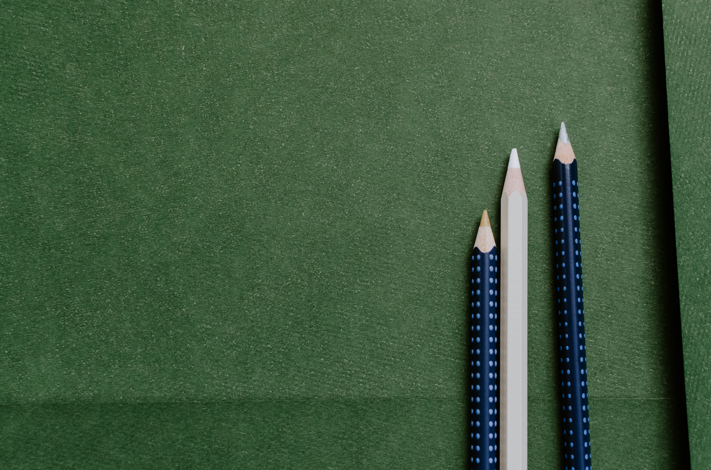
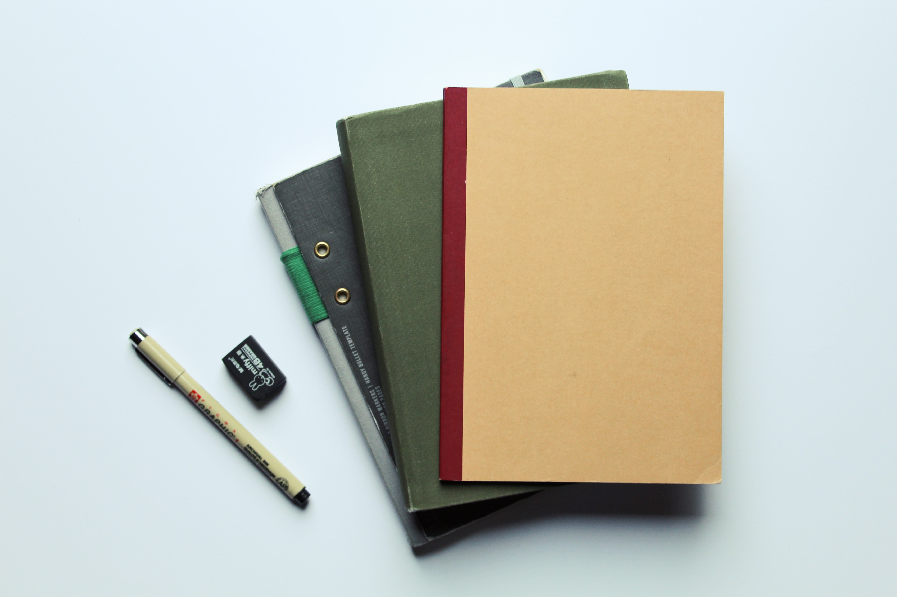
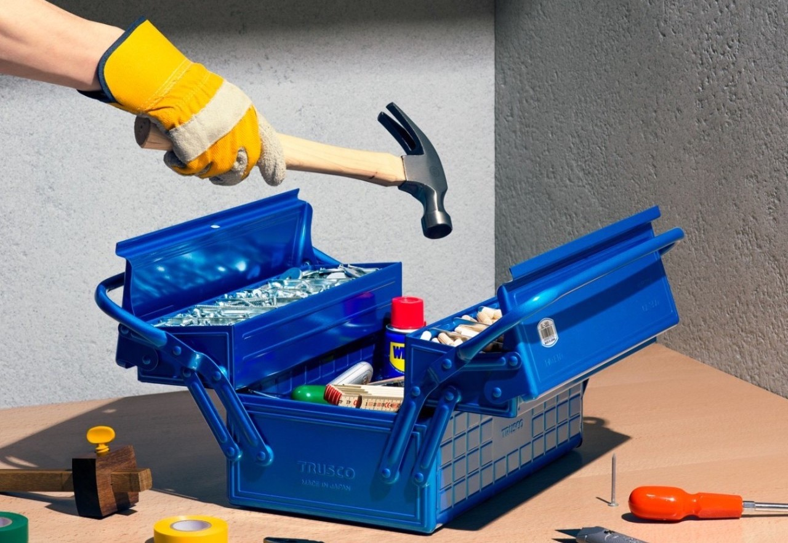

Products
Writing Instruments
-
Blackwing Pearl / Set of 12
Classic pearl white finish with balanced graphite. Iconic square Blackwing ferrule and white eraser.
$27.00
-
Caran d'Ache Natural HB Graphite Pencil
Fine-quality wooden pencil made in Switzerland. The unfinished wood surface grants a natural and comfortable writing experience.
$1.50
-
Mitsubishi HI-UNI Pencil / Set of 12
Uni Mitsubishi's best-selling highest-level wooden pencil line. The layers of lacquer and crisp imprint create a beautiful finish with the lead grade imprinted at the top.
$25.00
-
Kakimori Aluminum Fountain Pen
Designed for everyday writing with a striking linear form and a textured matte finish. Aluminum pen barrel, stainless steel nib, converter, and cap.
$50.00
-
Kaweco Classic Sport Rollerball Pen
Fountain pen inspired by the original 1935 octagonal design. Screw on cap protects nib. Constructed of premium durable plastic.
$22.00
-
Pilot Birdie Ballpoint Pen / Stainless Steel
A thin and compact 11cm long mechanical pencil made of stainless steel.
$8.25
Paper Goods
-
Midori MD A6 Notebook / Blank
A soft cover blank notebook with bleed and smear-resistant MD paper. Each page has a bold centerline that divides the page into top and bottom sections.
$10.00
-
Lamali Medium Cotton Notebook / White
100% Cotton paper multi-purpose journal. Paper is acid-free with a textured finish and deckle edge.
$25.00
-
Itoya A5 Notebook / Grid
A minimal notebook with 160 A5-sized pages. 78.3 gsm smooth writing paper. No blur or bleed-through.
$18.00
-
Mnemosyne Stitch Memo Pad / Grid
A staple-bound memo pad designed for convenient note-taking. Features a grey 5mm grid pattern on the front page of each perforated sheet.
$5.00
-
Kobeha Graphilo A5 Notebook / Lined
Soft cardstock covers with stitch binding and 64 pages of fountain pen friendly paper.
$15.00
-
Ito Bindery Drawing Pad / Grey
Seventy sheets of high-quality Japanese paper mounted on a sturdy base made with recycled cardboard. Microperforated sheets at the header.
$20.00
Carry & Storage
-
Trusco Steel Flat Tool Box T-320
Rounded corners throughout and embossings on top and bottom that allows for easy stacking. The top lid has a retractable handle with a secure latch closure.
$36.00
-
Kolo Parker Large / Black wax
Organic cotton canvas travel pouch. Weatherproof wax coating that patinas over time. Two-way, solid brass zipper with nickel matte finish.
$55.00
-
Hightide Wide Nähe General Purpose Case / Black
The clear PVC pouch makes it easy to organize and instantly see and store pen, stationery and small gadgets.
$8.00
-
Topologie Wares Bottle Sachoche Bag / Moss
Designed to discreetly carry water bottles, it doubles as your everyday sling bag and holds your phone, keys and wallet too.
$75.00
-
Bellroy Woven Pencil Case / Saltbrush
A sleek zip pouch for pens, pencils, cables and small personal items. Made from durable woven fabric and leather detailing.
$39.00
-
Hightide Penco Console Box
An all-metal construction console box that can be used for a wide range of applications. Anti-slip seal that prevents rubbing on the bottom is attached.
$31.00